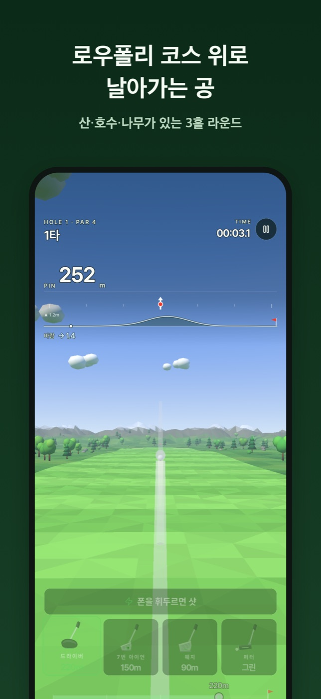
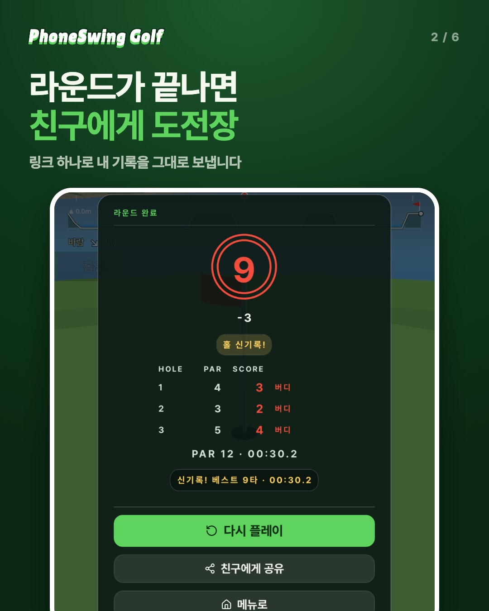
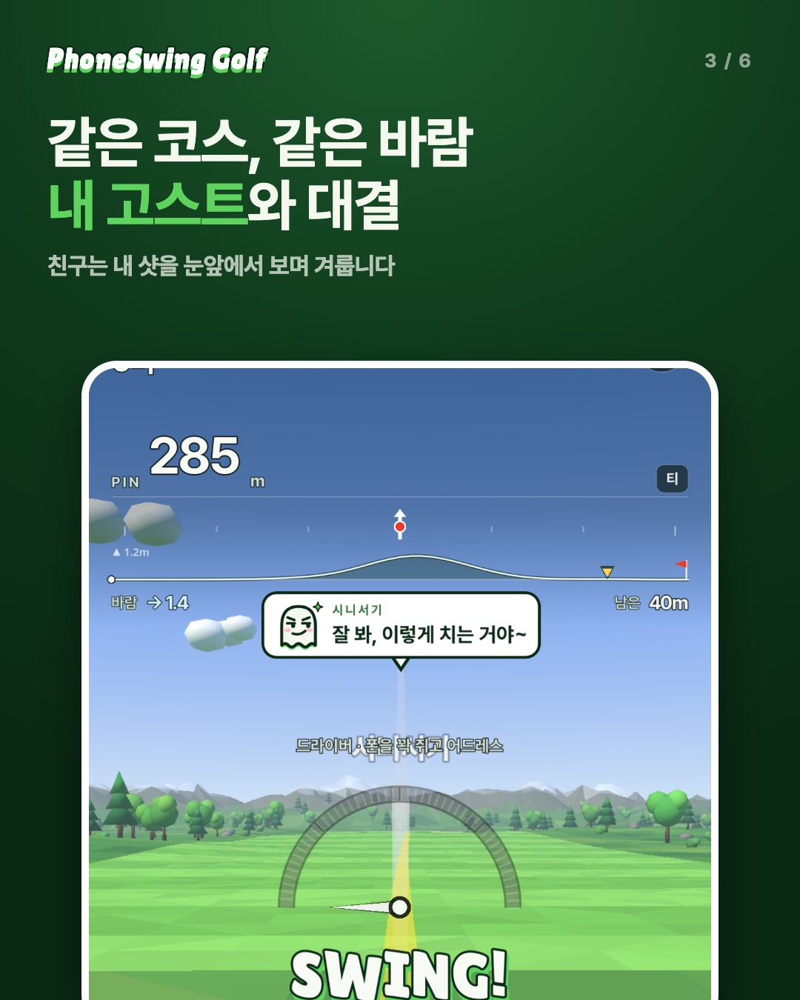
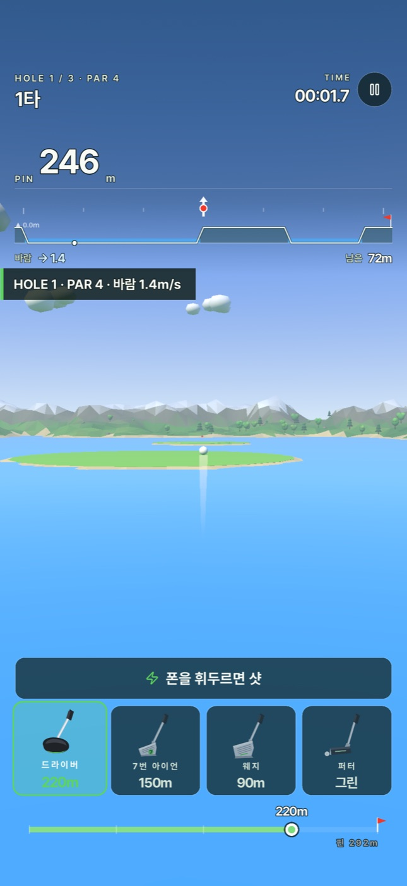

🎉 [Swing Golf] v1.11 릴리즈
📅 v1.11 빌드 업로드: 2026-10-12 · 이 글이 다루는 범위: v1.4(2026-08-13) ~ v1.11(2026-10-12)

Swing Golf v1.11을 공개합니다. 지난 글이 v1.3(2026-08-09)이었으니 두 달 사이 v1.4부터 v1.11까지 여덟 개 버전이 나왔고 이 글에 한꺼번에 정리합니다. 이번 구간에서는 혼자 치던 게임을 누군가와 겨루는 게임으로 바꾸는 일에 집중했습니다. Game Center 순위표로 시작해 내 베스트 기록과 겨루는 고스트, 그 고스트를 친구에게 보내는 도전 링크까지 이어졌습니다.
중간에 막힌 구간도 있었습니다. 8월에는 광고가 한 번도 나가지 않는 문제 하나로 1.5 빌드를 일곱 번 올렸고, 원인은 결국 코드가 아니었습니다. 그 이야기도 함께 적어 둡니다.
✨ What’s New
친구에게 도전장을 보낼 수 있습니다 (v1.10)
라운드 결과 화면에 ‘친구에게 공유’ 버튼이 생겼습니다. 누르면 OS 공유 시트가 열리고 이번 라운드가 링크 하나에 담겨 나갑니다. 링크를 받은 친구가 열면 같은 코스, 같은 모드, 같은 바람에서 내 샷을 고스트로 보면서 라운드를 칩니다. 끝나면 이겼는지 졌는지가 나옵니다.

서버는 두지 않았습니다. 코스·모드·닉네임·타수·시간과 홀별 고스트를 압축해 링크의 # 뒤에 그대로 싣습니다. 프래그먼트라서 링크를 안내하는 웹 페이지의 서버 로그에도 기록 내용이 남지 않습니다. 고스트에는 기록 당시의 바람과 코스 서명도 같이 저장하는데, 나중에 물리 상수가 바뀌어도 그때 궤적 그대로 재생하고, 코스 자체가 바뀌었으면 그 홀 고스트는 재생하지 않으려는 것입니다.
링크는 Universal Link로 앱을 열고 앱 안 브라우저에서 “앱에서 열기”를 쓸 수 있도록 phoneswinggolf:// 커스텀 스킴도 함께 넣었습니다. iPhone 15 Pro와 Galaxy A20s 사이에서 도전 링크를 주고받아 3홀 고스트가 모두 재생되는 것, 카카오톡 링크에서 앱이 열리는 것을 실기로 확인했습니다.
붙이는 과정에서 한 번 크게 걸렸습니다. 딥링크 플러그인이 iOS 빌드 시 entitlements 파일을 통째로 다시 쓰는 바람에 Game Center 권한이 지워지고 있었습니다. 플러그인을 패치해 기존 파일에 associated-domains 항목만 덧붙이도록 바꿨습니다. 예전 결과 공유용이던 공유 카드 이미지는 이 링크로 대체하면서 뺐습니다.
고스트가 말을 겁니다 (v1.7 → v1.10)
고스트는 v1.7에서 처음 들어왔습니다. 내 베스트 라운드의 샷을 기록해 두었다가 다음 라운드에서 같은 홀 시계에 맞춰 반투명 공으로 다시 날립니다. 설정에서 끌 수 있습니다.
v1.10에서는 고스트를 ‘상대’로 만들었습니다. 고스트 위에 닉네임 이름표를 달고(설정에서 입력, iOS는 Game Center 별칭으로 한 번 자동 채움) 상황마다 말풍선으로 반응하게 했습니다. 홀마다 고스트의 첫 샷에서는 으쓱하고, 내가 넣기 전에 고스트가 먼저 홀인하면 약을 올리고, 내가 먼저 넣으면 웁니다. 반응마다 대사가 다섯 줄씩 있고 직전 대사는 연달아 나오지 않습니다.

처음 만든 말풍선은 누가 말하는지가 분명하지 않았습니다. ‘졌다’는 대사를 보고 고스트가 진 건지 내가 진 건지 모르겠다는 피드백을 받았고, 원인을 짚어 보니 네 가지였습니다. 둥근 얼굴 이모트가 내 감정 이모지처럼 읽혔고, 말풍선에 화자가 없었고, 결과 카드 위로 올라가면 꼬리가 고스트를 가리키지 못했고, 대사의 주어가 모호했습니다. 이모트를 고스트 실루엣으로 다시 그리고, 말풍선 위에 고스트 이름을 붙이고, 대사를 ‘으앙… 네가 이겼어!’로 바꿨습니다.
같은 버전에서 클래식 모드의 스윙 차례 표시도 바꿨습니다. “좋아요! 이제 백스윙 → 스윙!” 같은 문장 대신, 준비 중에는 흐린 유리 알약만 두고 차례가 오면 SWING!/PUTT! 스티커가 튀어 오르며 짧게(60ms) 진동합니다.
Game Center 순위표와 결과 카드 Top 5 (v1.6 → v1.11)
v1.6에서 iOS Game Center 순위표를 붙였습니다. 처음에는 코스 3개 × 클래식/패스트로 6개였습니다. 클래식은 타수로, 패스트는 시간으로 순위를 매깁니다. 이 플러그인이 iOS 17.0 이상을 요구해서 최소 지원 버전이 함께 올라갔습니다. 이후 v1.7에 오늘의 챌린지 순위표, v1.9에 코랄 아일 순위표 2개가 더해졌습니다.
v1.10에서는 라운드가 끝나면 결과 카드에 “최고 기록 N위 / M명”(20명 이상이면 상위 %)을 띄우고 v1.11에서는 그 아래 상위 5명의 순위·별명·기록을 보여 줍니다. 내 줄은 금색입니다. 누구를 넘어야 하는지 결과 화면에서 바로 보이도록 했습니다.
v1.11 작업 중 한 가지를 고쳤습니다. 처음 만든 코드는 내 기록을 먼저 읽고 나서 목록을 내보냈는데, 처음 하는 코스처럼 순위표에 내 기록이 없으면 목록까지 통째로 뜨지 않았습니다. 지금은 순위 칩만 내 기록에 의존하고 Top 5는 항상 보입니다. Android에는 Game Center가 없어 이 표시가 나오지 않습니다.
섬 코스 ‘코랄 아일’과 물 해저드 (v1.9)
네 번째 코스입니다. 둥근 페어웨이 섬 사이가 전부 물이고, 공이 물에 닿으면 수면에서 멈춘 뒤 1벌타를 받고 직전에 친 자리에서 다시 칩니다.

처음 만든 섬은 실기로 쳐 보니 너무 어려웠습니다. 섬 반경을 약 1.35배로 키우고 그린마다 페어웨이 에이프런 섬을 붙였습니다. 섬 윗면과 그린이 같은 높이라 그린 주변이 반짝이는 z-파이팅도 있어서 섬 면을 그린·벙커보다 살짝 아래로 내렸습니다. v1.10에서는 3번 홀처럼 기본 선택 거리(드라이버 220m)로 치면 물에 빠지는 홀에서, 마른 땅에 멈추는 가장 긴 거리(190m)로 시작하도록 고쳤습니다.
물이 생기면서 조준 화면 위쪽 고도 단면도 손봤습니다. 지금 거리 게이지를 풀파워로 쳤을 때 공이 멈출 예상 지점을 ▼로 찍고 땅이면 노랑, 물이면 파랑으로 표시합니다. 컵 위치에는 빨간 깃발을 세웠습니다.
로우폴리 코스와 ‘글래스 & 라임’ UI (v1.7)
코스 그래픽을 통째로 다시 만들었습니다. 면마다 색을 조금씩 다르게 한 플랫 셰이딩 지형, 페어웨이 회랑 밖의 산(최대 34m)·호수·설산, 소나무·활엽수·바위·덤불 약 280개, 납작한 구름, 따뜻한 해와 안개 원근이 들어갔습니다. 공의 물리는 같은 지형 높이 함수 하나를 그대로 쓰고 페어웨이 회랑 안·티·그린 배치는 바꾸지 않았습니다. 볼거리는 늘리되 손에 익은 비거리는 건드리지 않으려는 선택이었습니다.
풍경이 늘어난 만큼 무거워졌습니다. 구름을 병합 메시로 바꾸고 지형 아래 깔려 있던 넓은 수면 평면 대신 물이 실제로 보이는 골짜기 칸에만 수면을 그려 드로우콜을 53개에서 17개로 줄였습니다. iPhone 15 Pro에서 120fps를 확인했습니다.
2D UI도 바꿨습니다. 크림색 패널과 베벨 버튼의 ‘캔디 스코어카드’ 대신, 살아 있는 3D 코스 위에 어두운 유리판을 얹고 강조색은 라임 하나만 씁니다. 클럽 선택 카드에는 직접 그린 드라이버·7번 아이언·웨지·퍼터 일러스트를 넣었고 워드마크는 Lilita One 서체로 바꿨습니다.
오늘의 챌린지와 홀 신기록 (v1.7 → v1.9)
v1.7에서 오늘의 챌린지를 넣었습니다. 처음에는 날짜로 정해지는 1홀이었습니다. 하루 첫 완주만 기록하고 연속 참여 스트릭을 쌓습니다. 홀마다 베스트를 따로 기록하고 깨면 ‘홀 신기록!’ 배지와 컨페티가 터집니다.
1홀짜리 데일리가 밋밋하다는 피드백이 있어 v1.9에서 하루 한 코스의 3홀 라운드로 바꿨습니다. 그린힐 → 샌드베이 → 스톰릿지 → 코랄 아일 순으로 날마다 돌아가고 조건은 일반 코스와 같습니다.
8개 언어 (v1.8)
일본어·중국어(간체)·스페인어·독일어·프랑스어·포르투갈어를 더해 한국어·영어까지 8개 언어가 됐습니다. App Store 상품 페이지와 스크린샷도 8개 언어로 맞췄습니다.
일본어·중국어를 넣자 iPhone 실기에서 한자가 네모(tofu)로 나왔습니다. 본문 서체 Pretendard에 그 한자들이 없고, iOS에서는 Godot의 시스템 폰트 폴백이 동작하지 않았기 때문입니다. Noto Sans JP/SC에서 게임 문구에 실제로 쓰는 글자만 잘라 낸 서브셋(87KB)을 번들하고 폴백으로 걸었습니다. 문구를 고치면 서브셋을 다시 만들도록, 모든 한자가 번들 폰트에 있는지 검사하는 테스트도 넣었습니다.
이걸 보다가 다른 버그도 하나 찾았습니다. Godot의 Control은 바로 위 부모가 Control이나 Window일 때만 테마를 물려받는데, UI 전체가 일반 Node 아래 붙어 있어서 그동안 지정한 폰트 대신 Godot 내장 기본 폰트로 그려지고 있었습니다. 기본 테마의 폰트를 직접 바꿔 본문도 Pretendard Bold로 통일했습니다. 그래서 v1.8부터 본문 글자가 예전보다 굵어 보입니다.
🐛 Bug Fixes
- 설정 화면이 터치로 스크롤되지 않던 문제 (v1.7) — 카드가 드래그 입력을 삼키고 있었습니다. 닫기 버튼도 화면에 고정했습니다
- App Store에 지원 언어가 영어만 표시되던 문제 (v1.8.1) — 스토어의 지원 언어는 App Store Connect 현지화가 아니라 앱 번들 Info.plist의
CFBundleLocalizations를 읽습니다. 8개 언어를 선언한 빌드만 따로 냈습니다 - 2·3번 홀 고도 단면에 1번 홀 단면이 남던 문제 (v1.10)
- 영어 단복수 표기와 라운드 신기록에 홀 배지가 잘못 붙던 문제 (v1.7)
⚙️ Under the Hood
광고가 한 번도 나가지 않았던 1.5
v1.4에서 3홀 라운드를 마친 뒤 전면 광고를 붙였고 광고가 닫히면 결과 화면이 바로 보이도록 순서를 다듬었습니다. 그런데 출시용 빌드에서 광고 요청이 한 번도 나가지 않았습니다. AdMob 콘솔의 요청 수가 0으로 남아 있었습니다.
광고를 띄우기 전에 Google의 동의 SDK(UMP)로 개인정보 동의 상태를 확인하는데, 그 결과를 알려 주는 콜백이 돌아오지 않는 것이 증상이었습니다. 코드 쪽 문제라고 보고 1.5 빌드를 하나씩 올리며 좁혀 갔습니다.
- 빌드 13 — 모바일 광고 SDK 초기화를 기다리도록
- 빌드 14 — 출시 빌드에서 광고 처리 단계를 추적하는 로그 추가
- 빌드 15 — UMP 요청을 보내기 전에 응답 신호를 먼저 구독하도록
- 빌드 16 — 콜백이 5초 안에 오지 않을 때, 이미 저장된 동의 상태가 ‘필요 없음’ 또는 ‘받음’일 때만 광고를 초기화하는 타임아웃 경로
- 빌드 17 — 실패 코드 기록
진짜 원인은 AdMob 콘솔에 있었습니다. 개인정보 메시지(유럽 규정·미국 주 규정)를 게시하지 않은 상태에서는 UMP가 콜백을 아예 돌려주지 않습니다. 2026-08-26에 메시지를 게시하자 앱을 다시 빌드하지 않았는데도 풀렸습니다. 기기에 깔려 있던 TestFlight 1.5(17) 그대로 광고가 정상으로 나오는 것을 확인했습니다. 빌드 14부터 17까지 네 개를 콘솔 설정 하나 때문에 쓴 셈입니다.
타임아웃 경로는 지우지 않았습니다. 동의 상태가 ‘필요함’이나 ‘알 수 없음’이면 광고를 띄우지 않는 쪽으로 닫혀 있고 추적 로그로 정상 콜백과 구분되기 때문에 원인을 가리지 않습니다. 다른 이유로 콜백이 사라질 때의 방어로도 남겨 둘 만했습니다. 대신 코드 주석에 “이 타임아웃이 늘 발동하면 코드보다 AdMob 콘솔을 먼저 보라”고 적고 판별 기준도 남겼습니다. 기기 로그에서 광고 로드가 0.3초 안에 찍히면 정상 콜백이고, 5초쯤 뒤에 찍히면 타임아웃 경로입니다.
1.4는 App Store Connect에서 직접 내린(DEVELOPER_REJECTED) 상태로 남아 새 1.5 버전을 만들 수 없었습니다. 1.4 레코드에서 빌드 연결만 풀고 같은 레코드의 버전 문자열을 1.5로 바꿔 이어 갔습니다.
v1.6.1은 코드 변경 없이 App Store 마케팅 URL만 넣은 빌드입니다. AdMob이 app-ads.txt를 찾을 도메인을 알 수 있게 하려는 것이었습니다.
검증 하니스가 실제 순위표에 점수를 올리고 있었습니다
실기에서 자동으로 3홀을 도는 검증 하니스(proof harness)가 로그인된 Game Center 계정으로 점수를 실제 순위표에 제출하고 있었습니다. 3홀 3타 같은 기록이 순위표에 올라가 있었던 것입니다. v1.9에서 하니스 실행 중에는 점수 제출을 건너뛰게 했습니다. 하니스가 끝난 뒤 늦게 도착한 저장이 실기 세이브를 하니스 기록으로 덮어쓰던 문제(v1.10)와, 고스트 표시 설정을 꺼 둔 세이브에서 도전·고스트 검증이 전부 실패하던 문제(v1.11)도 고쳤습니다.
그 밖에
- 오늘의 챌린지 순위표 점수를 타수만으로 바꿨습니다(v1.7 빌드 21). 처음에는 타수와 시간을 합친 큰 정수로 올렸는데 Game Center 화면에서 읽을 수가 없었습니다
- 테스트 러너가 스크립트 에러를 실패로 집계합니다(v1.10)
💻 Platforms
- iOS — iOS 17.0 이상(v1.6부터. 이전에는 14.0). App Store 무료. 한국어·영어·일본어·중국어(간체)·스페인어·독일어·프랑스어·포르투갈어
- Android — 이번 구간에는 iOS 빌드만 올렸습니다. Android 태그는 v1.2가 마지막입니다
📜 Version History
| 버전 | 빌드 | 날짜 | 내용 |
|---|---|---|---|
| v1.4 | 8 | 2026-08-13 | 3홀 완주 후 전면 광고, 광고 뒤 결과 화면 순서 정리. 출시하지 않고 1.5로 대체 |
| v1.5 | 11–17 | 2026-08-16 ~ 08-19 | 1.4와 같은 광고 흐름. UMP 동의 콜백 문제로 빌드 7개 |
| v1.6 | 18 | 2026-09-26 | Game Center 순위표(코스 3개 × 클래식/패스트), 최소 iOS 17.0 |
| v1.6.1 | 19 | 2026-09-28 | App Store 마케팅 URL. 코드 변경 없음 |
| v1.7 | 20, 21 | 2026-09-30 | 로우폴리 코스, 글래스 & 라임 UI, 오늘의 챌린지, 홀 신기록, 고스트 |
| v1.8 | 23 | 2026-10-02 | 8개 언어, CJK 서브셋 폰트, 테마 폰트 상속 버그 수정. 2026-10-03 판매 시작 |
| v1.8.1 | 24 | 2026-10-03 | App Store 지원 언어 표시 수정 |
| v1.9 | 25 | 2026-10-06 | 섬 코스 코랄 아일, 물 해저드, 예상 정지 지점, 데일리 3홀 코스 순환 |
| v1.10 | 26 | 2026-10-11 | 친구 도전 링크, 고스트 이름표·말풍선, SWING! 스티커와 진동, 결과 카드 순위 |
| v1.11 | 27 | 2026-10-12 | 결과 카드 Game Center Top 5 |
날짜는 iOS 빌드를 올리며 남긴 태그의 날짜입니다. 1.5는 첫 빌드(11)와 마지막 빌드(17)의 날짜를 적었습니다. 저장소 기록상 v1.8은 2026-10-03, v1.9는 2026-10-07, v1.10은 2026-10-12에 App Store에 나갔고, v1.11은 아직 준비 중입니다.
🔜 What’s Next
- v1.11 심사 — 빌드 27을 올렸고 출시 전입니다
- App Store 평가 요청 — v1.11 빌드 뒤에 코드만 들어가 있습니다. 나라마다 평가가 0~1개라 스토어 순위에 불리해서 만들었습니다. 3라운드 이상 친 사람이 신기록을 냈거나 친구 도전에서 이겼을 때, 버전마다 한 번만, 다음에 메뉴가 열릴 때 iOS 평가 창을 요청합니다. 전면 광고가 뜰 수 있는 결과 카드에서는 묻지 않습니다. 실제로 창을 띄울지는 iOS가 정합니다. 어느 버전에 실릴지는 미정입니다
그 밖의 방향은 미정입니다.
🚀 Try it
⚠️ 팔을 휘두르는 게임입니다. 주변에 사람이나 물건이 없는 곳에서 폰을 꼭 쥐고 플레이해 주세요.